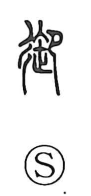

Explanation
御 contains 卸 as its sound-bearing core, with 彳 added beside it. The old forms show a kneeling person worshipping before 午, a ritual pestle; related forms use a bundle of twisted threads. The implements belong to the ceremony through which a divine power was received.
Receiving the god also brought protection against harmful influences. 御 could therefore express both welcoming a presence and holding misfortune away, a protective sense later written 禦. Serving the divine presence gave further meanings of attending, directing, and putting something to use.
Respectful attendance made 御 suitable for people of high status and, in Japanese, for the honorific prefixes o-, on-, and mi-. Its use for managing horses or driving a carriage is connected by sound with 馭. The graph thus gathers reception, service, protection, and control around the original act of ritual attendance.